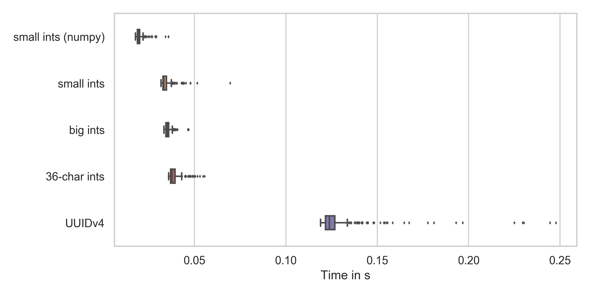

Big Data was a common buzzword in industry from 2012 until 2017. It is still common, but hopefully less of a buzzword. Now other buzzwords are more common:
By the way, I didn't include "artificial intelligence" because it dominates all of the others.
For me, a big-data solution means that I can't fit the critical part into
memory. This means that it is a question of time and money what problems
actually require a big data solution. Amazon's u-24tb1.metal instance has 24
TB of memory. Yes, that is not a typo on my side. TB, not GB.
(source). They
don't even publicly say how expensive those beasts are.
When it comes to big data, people think of Hadoop and Spark. I'm not sure if I want to go into that rabbit hole for this article. I want to show how to sort huge amounts of data on a single machine: My ThinkPad T460p with 8GB of memory.
Please note that an x1e.32xlarge EC2 instance with about 4 TB of RAM costs
about 27 USD per hour
(source). This means you
might not need such a solution for quite a while.
Data Generation
I want to generate a bit of data and make it at least a tiny bit realistic. So let's generate about 20GB of data in a CSV file.
Disk Space
With df -h I realized that I only have 5 GB left of my 500GB HDD 😢
The Disk Usage Analyzer showed the following disk space hogs:
- 404 GB: My Home Directory:
- 152 GB: Various git repositories
- 103 GB: My "algorithms" repository
- 99 GB for PyPI (see PyPI Analysis 2020)
- 4 GB for a database benchmark. I never really finished this; I moved on to other topics
- 28 GB for YouTube-Report. Or rather the Takeout
- 103 GB: My "algorithms" repository
- 97 GB: Downloads
- 1.5 GB: Photos of a hiking trip
- 800 MB: HASYv2
- many smaller things ... that would take a while. Maybe I should just delete everything
- 44 GB: Pictures
- 22 GB: Dropbox
- 20 GB: .local
- 10 GB: .cache (mostly pip and pipenv)
- 9 GB: Anaconda
- many smaller things
- 152 GB: Various git repositories
- 26 GB
/usr- 7 GB TexLive
- 6 GB CUDA in different versions
- 7 GB
/var- 5 GB journal logs
- some smaller things
I'm astonished not to see Docker here 🤔
After this short cleanup, I have 128G available 🎉
Generate it!
I don't want to spend too much time dealing with the actual element-by-element comparison, so I want to use integers or strings to compare. I also don't want to fiddle around with data organization, so I don't add a payload. We only generate the data which is to be sorted.
I can imagine two ways to generate data to sort: Random numbers and UUIDs. Let's see which is faster (code on GitHub):
{kind=link}

As you can see, numpy is the fastest and UUIDv4 generation is by far the slowest. But numpy cannot generate random integers which are that big and the time difference is not that huge. Everything as expected.
So, let's say we generate those 36-character random numbers. Each of them needs
37 bytes — don't forget the newline. For 20 GB, we need 540 540 541 elements.
Let's say 550 million numbers. My machine needed about 0.05s to generate 10k, so
I expect it to take 540540541 / 10_000 * 0.05 / 60 = 45 min. A good time to
get some food 🙂
Done after 32 minutes. The file size is 20.4 GB.
Bash Sorting
Sorting with standard Unix tools — namely split and sort — is the simplest
solution that came to my mind which should also be pretty fast. I will
wrap all commands in time (the actual command) so that you can see how
fast they are.
Chunk the data:
$ time (split -l 10000000 numbers-large.txt chunk-)
real 89,00s
user 5,16s
sys 25,29s
Sort the chunks:
$ time (for X in chunk-*; do sort -n < $X > sorted-$X; done)
real 625,44s
user 2768,27s
sys 85,40s
Merge:
$ time (sort -n -m sorted-chunk* > sorted.txt)
real 531,50s
user 470,09s
sys 52,20s
In total, this approach needed 20 min and 46 seconds.
I will check other solutions for correctness by the following command. It takes 91s just to check if the two files are identical!
$ cmp -l shell-sort/sorted.txt other-solution.txt
Python
Let's see how quick I can do it with Python!
Merge Sort
You can see the code on GitHub. The idea is to (1) split the file into chunks that fit into memory, (2) sort the chunks, and (3) merge the chunks pair-wise. With this approach, you only have to keep two chunks at a time in memory.
This takes many hours to execute.
There are a couple of things that come in handy when you have long-running processes:
- Progress bars: You want to have an indicator of how much time is remaining. Or if something crashed.
- Resumability: You want to be able to interrupt and resume later. An additional benefit is that the program becomes more robust against crashes. You achieve this by storing intermediate results.
Heap Sort
Basically the same idea as with merge sort, but using heapq:
import heapq
def merge_files(filepath1: str, filepath2: str, outpath: str) -> int:
"""
Using heapq to merge two files.
See https://docs.python.org/2/library/heapq.html#heapq.merge
"""
with open(outpath, "w") as fout, open(filepath1) as f1, open(filepath2) as f2:
for line in heapq.merge(f1, f2):
fout.write(line)
This takes 10420s (2h 53min 40s) to execute.
Trivial Radix Sort
Again, same idea as with the mergesort and the heapsort approach:
- Chunking: Generate 90 chunks for all of the 2-letter prefixes (10, 11, 12, ... 97, 98, 99). Each chunk is now small enough to fit into memory.
- Chunk sorting: Sort each chunk individually.
- Combining: Combine all of the chunks. As they were created by prefixes, this is just simply pasting the files together in the order of the prefixes.
The difference in this case is the chunking. That part already does a great deal of the sorting which makes the combining step trivial.
Timing:
- Chunking: 290.4s
- Chunk Sorting: 779.5s
- Combining: 208.4s
In total, the Python Radix-Sort is at 21 min and 30 seconds.
Multi-process Radix Sort
Most of the time is spent on sorting. However, I only used one core. So we can improve the wall-clock execution time by running on multiple cores!
To do so, we make a minor adjustment:
def sort_chunks(state: Dict[str, Any]) -> Dict[str, Any]:
from multiprocessing import Pool
pool = Pool(processes=8)
pool.map(sort_chunk, state["chunks_to_sort"])
return state
Timing:
| Task | 2.7.18 | 3.6.10 | 3.7.7 | 3.8.3 | 3.9.0a |
|---|---|---|---|---|---|
| Chunking | 192.2s | 302.5s | 308.5s | 279.8s | 292.6s |
| Chunk Sorting | 262.4s | 301.0s | 253.3s | 248.6s | 252.0s |
| Combining Chunks | 137.3s | 212.1s | 221.5s | 187.2s | 195.5s |
| Total | 592.1s | 815.8s | 783.6s | 715.7s | 740.2s |
In total, the Python parallel Radix-Sort is at 12 min and 45 seconds.
The speed-up is 3.1x.
It's quite weird that Python 2.7 is way faster than Python 3.6+. I've asked on Stack Overflow Did I/O or dictionaries become slower since Python 2.7?, but didn't receive an answer so far.
Dask
I wanted to give Dask a try and got some help. However, I interrupted the execution of the following solution after 5 hours:
import dask
import dask.dataframe as dd
input_file = "numbers-large.txt"
output_file = "numbers-large-sorted-dask.txt"
blocksize = 1_000_000
print("Create ddf")
ddf = dd.read_csv(input_file, header=None, blocksize=blocksize)
print("Sort")
ddf_sorted = ddf.set_index(0)
print("Write")
fut = ddf_sorted.to_csv(output_file, compute=False, single_file=True, header=None)
dask.compute(fut)
print("Stop")
SQLite
Databases should be able to deal with large amounts of data, right? So let's create a database with a single table and a single column, insert the data and use SQL to sort:
"""Sort a huge amount of data by inserting it into SQLite."""
# Core Library modules
import logging
import sqlite3
import sys
import time
logging.basicConfig(
format="%(asctime)s %(levelname)s %(message)s",
level=logging.DEBUG,
stream=sys.stdout,
)
logger = logging.getLogger(__name__)
def main(big_filepath: str):
db_filepath = "numbers-large.sqlite"
output_filepath = "sqlite-sorted-numbers.txt"
if True:
t0 = time.time()
create_db(big_filepath, db_filepath, batch_size=10 ** 7)
t1 = time.time()
print(f"create_db finished in {t1 - t0}")
if True:
t0 = time.time()
read_sort_write(db_filepath, output_filepath)
t1 = time.time()
print(f"sorting and writing with sqlite finished in {t1 - t0}")
def create_db(big_filepath: str, db_filepath: str, batch_size: int = 10 ** 6):
con = sqlite3.connect(db_filepath)
# Create the table
con.execute("CREATE TABLE numbers(i)")
batch_count = 0
with open(big_filepath) as fp:
batch = []
for line in fp:
batch.append((line,))
if len(batch) >= batch_size:
con.executemany("INSERT INTO numbers(i) VALUES (?)", batch)
con.commit()
batch = []
batch_count += 1
logger.info(f"Finished batch {batch_count}")
con.executemany("insert into numbers(i) values (?)", batch)
con.commit()
logger.info("Make index")
con.execute("CREATE INDEX fooindex ON numbers(i)")
con.commit()
logger.info("Finished making index.")
con.close()
logger.info("Finished creation of SQLiteDB")
def read_sort_write(db_filepath: str, output_filepath: str):
con = sqlite3.connect(db_filepath)
res = con.execute("SELECT i FROM numbers ORDER BY i ASC")
with open(output_filepath, "w") as fp:
for el in res:
fp.write(el[0])
if __name__ == "__main__":
main("numbers-large.txt")
Timing it:
- create_db: 850s
- sorting and writing with sqlite: 1184s
In total, it needed 2033s (33min 53s).
If you make that single column an index after inserting:
- create_db: 1980s (index-making added 1130s)
- sorting and writing with sqlite: 432s (index made it faster by 752s)
C++
Single-Core Radix-Sort
For implementing it, the following was important:
- File Flushing: If you use
endlfor the newline, then the chunking step alone takes 1814s. That one takes 290s with Python. -O3: Just compile it withg++ -O3 radixsort.cpp.
Here is the code:
#include <algorithm>
#include <fstream>
#include <iostream>
#include <iterator>
#include <map>
#include <vector>
using namespace std;
vector<string> chunk_data(string big_filepath)
{
vector<string> chunks_to_sort;
map<string, ofstream* > prefix2file;
system("mkdir cpp-radix");
for (int i = 10; i < 100; ++i) {
string prefix = to_string(i);
prefix2file[prefix] = new ofstream("cpp-radix/" + prefix + ".txt");
chunks_to_sort.push_back("cpp-radix/" + prefix + ".txt");
}
// Read and split the file
ifstream infile(big_filepath);
string line;
cout << "start chunking" << endl;
while (infile >> line) {
*prefix2file[line.substr(0,2)] << line << '\n';
}
cout << "chunking done" << endl;
// Close files
for(map<string,ofstream*>::iterator it=prefix2file.begin();
it!=prefix2file.end(); ++it) {
(*it).second->close();
}
return chunks_to_sort;
}
void sort_chunk(string filepath)
{
// Read
vector<string> lines;
ifstream infile(filepath);
string line;
while (infile >> line) {
lines.push_back(line);
}
// Sort
sort(lines.begin(), lines.end());
// write
ofstream output_file(filepath);
ostream_iterator<string> output_iterator(output_file, "\n");
copy(lines.begin(), lines.end(), output_iterator);
}
void merge(vector<string> chunks)
{
ofstream output_file("cpp-sorted.txt");
// The chunks are ordered by their two-digit prefix. Hence it is enough to
// concatenate the sorted chunks in this order.
vector<string>::iterator it_chunk;
for(it_chunk=chunks.begin(); it_chunk != chunks.end(); it_chunk++) {
cout << "Merge " << *it_chunk << endl;
// Read file
ifstream infile(*it_chunk);
string line;
while (infile >> line) {
output_file << line << '\n';
}
infile.close();
}
output_file.close();
}
int main()
{
vector<string> chunks_to_sort = chunk_data("numbers-large.txt");
vector<string>::iterator it_chunk;
for(it_chunk=chunks_to_sort.begin(); it_chunk != chunks_to_sort.end(); it_chunk++) {
cout << "Sort " << *it_chunk << endl;
sort_chunk(*it_chunk);
}
cout << "Merge" << endl;
merge(chunks_to_sort);
cout << "done" << endl;
return 0;
}
In total, it took 18min 50s.
Multi-Core Radix-Sort
Add #pragma omp parallel for, compile with the following flags and off it goes!
g++ radixsort.cpp -O3 -std=c++11 -Wall -pedantic -fopenmp
In total, 715s (11min 55s).
See also
StackExchange
- How can I sort a 10GB file?, 2015.
- Übersicht über Sortieralgorithmen (German)